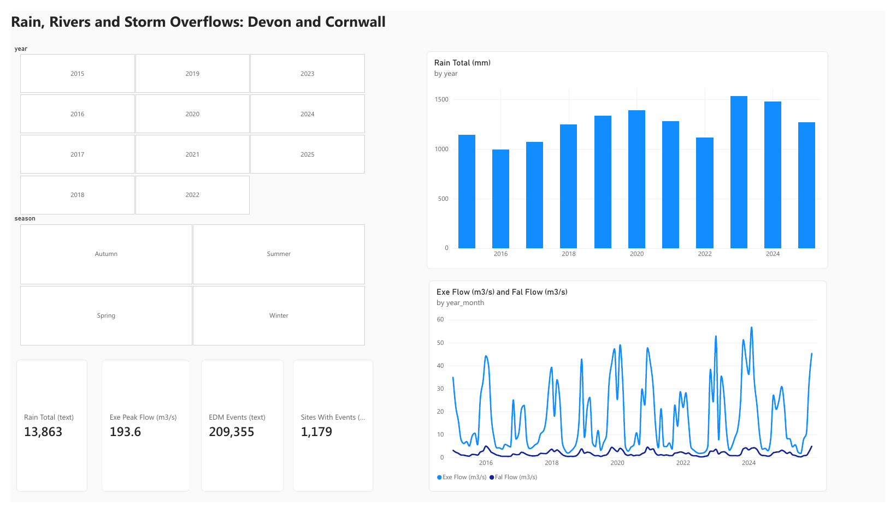
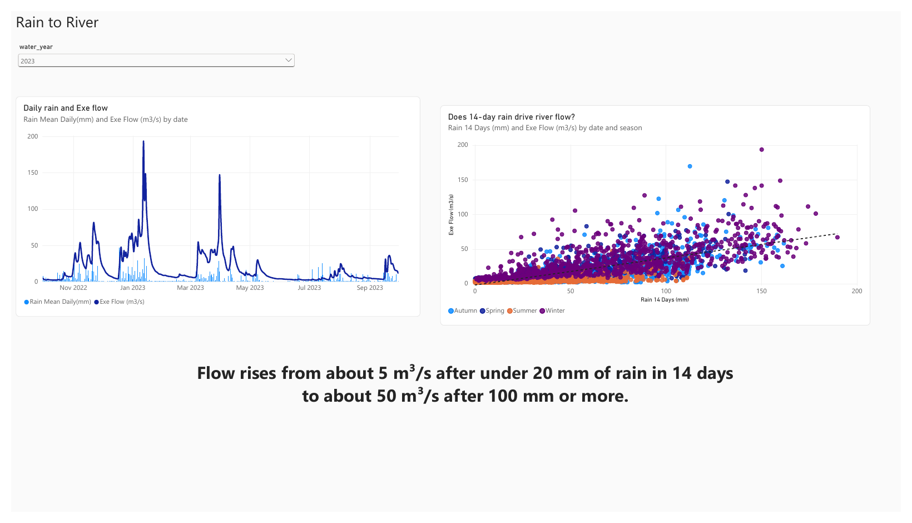
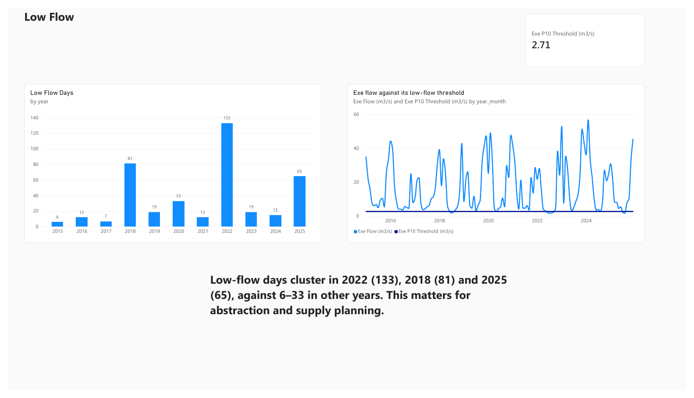
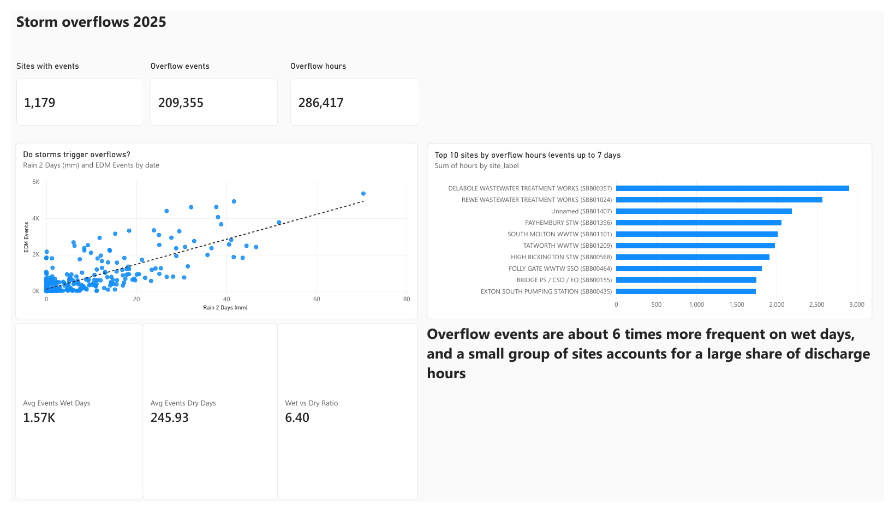
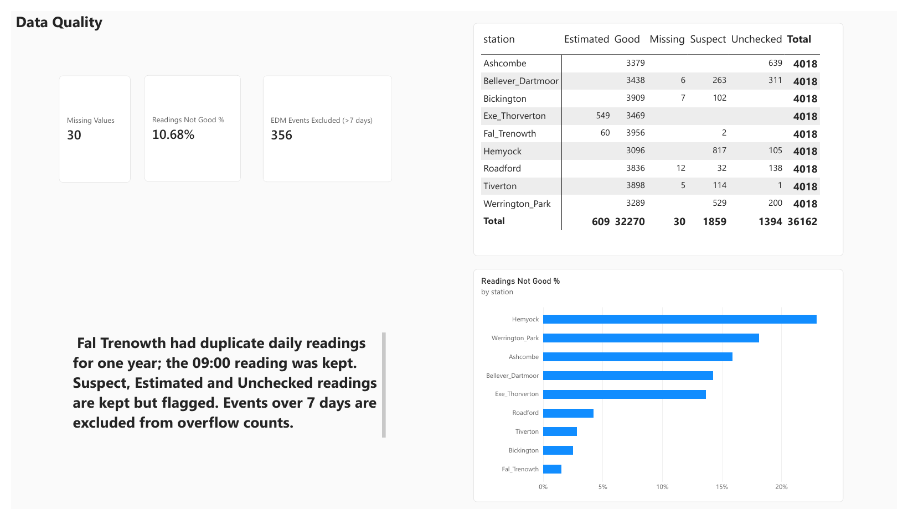
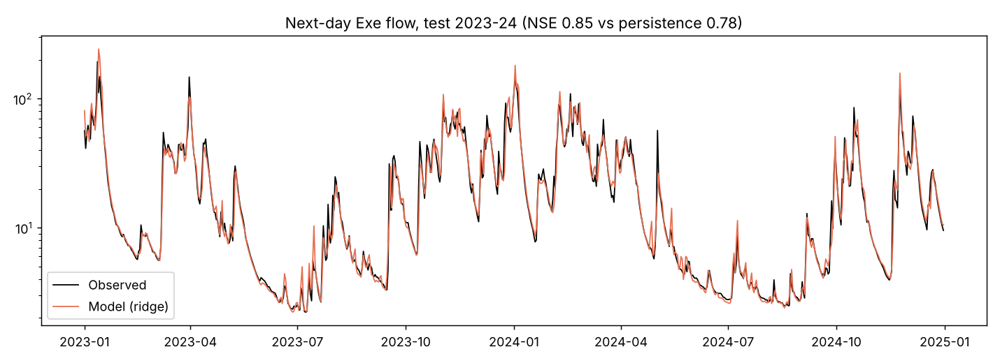

Power BI • SQL • Python • Water data
An end-to-end analysis of open data for Devon and Cornwall: how rainfall drives river flow, how closely storm-overflow discharges follow rainfall, and a six-page Power BI dashboard with the method and limits stated.

The question: how does rainfall drive river flow in the South West, and how closely do storm-overflow discharges follow rainfall? The analysis uses open data only (Open Government Licence v3): daily rainfall and river flow from the Environment Agency Hydrology API, and the 2025 Event Duration Monitoring data published by South West Water.
The workflow was Python (pandas, scikit-learn) for cleaning, quality checks and a next-day flow model, 11 SQL queries (SQLite) for the summary tables, and Power BI for the dashboard. Data-quality decisions and limitations are documented throughout.
36,162
7 rain gauges, 2 flow stations, 2015–2025209,711
1,179 sites, 202510.7%
Kept, flagged, never set to zero356
Longer than 7 days, likely monitor faults6.4×
Overflow events per day




-- Low-flow days per year (River Exe below its own 10th percentile)
WITH ranked AS (
SELECT date, value,
PERCENT_RANK() OVER (ORDER BY value) AS pr
FROM fact_daily_readings
WHERE station = 'Exe_Thorverton' AND value IS NOT NULL
)
SELECT substr(date, 1, 4) AS year,
SUM(pr <= 0.10) AS low_flow_days,
ROUND(MIN(value), 2) AS min_flow_m3s
FROM ranked
GROUP BY 1
ORDER BY 1;
This query produced the low-flow result above (2022: 133 days, 2018: 81, 2025: 65). The full set of 11 queries is in the repository (sql/analysis.sql).